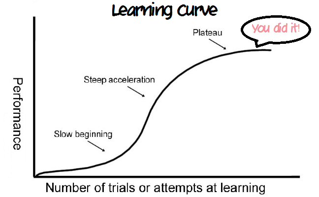

В этом посте поговорим об одном из способов развития программиста — о pet-project. Так обычно называют небольшие проекты, которые разработчики пилят в свободное время, исключительно just 4 fun и прокачки, ну и иногда ради профита.
Развитие программиста, на мой взгляд, порой напоминает такую кривую обучения:
В университете и в начале карьеры происходит бурный рост — все незнакомое и новое. Заботаешь концепт, паттерн, алгоритм или даже хоткей — сразу получаешь бонус к производительности. Устроился на работу — и после каждой задачи ты круче. Затем выходишь на плато — уже есть необходимые знания и навыки, чтобы решать задачи, а новые приобретаются с трудом и требуют сверхусилий. В работе все больше фокусируешься на задачках, которые принесут пользу проекту и команде — и саморазвитие уходит на второй план. Не хочется становиться динозавром, хочется расти!
Я хотел бы совмещать в основной работе задачки как полезные команде, так и развивающие меня как инженера. Если ты так умеешь — напиши мне, я хочу поговорить об этом ;) А пока качаться приходится по старинке — в свободное время ботать книжки, писать проекты, щупать технологии.
Книги и сухая теория мне редко заходят, я люблю учиться на практике, набивая шишки. Раньше качался на околорабочих задачах в свободное время, но вдруг захотелось попробовать какой-нибудь совсем отвязанный от работы проект — так пришел к идее своего pet-project.
Что хотел от pet-project:
Я люблю путешествовать со вкусом бюджетно, порой неудобно мониторить дешевые билеты — хотелось, чтобы был агрегатор, который бы уведомлял о скидках. Конечно, такие есть — и Vandrouki, и Telegram-канал Кольцово, и еще всякие. В этих агрегаторах мне не нравилось, что нельзя гибко управлять подпиской. Получаешь тонну нерелевантного спама. Ладно еще телеграм Кольцово — иногда я не знаю, куда хочу, но если вижу дешевые билеты из Екб, то почему бы не улететь. Но чаще я планирую поездку заранее, выбираю страну и даты — и тогда процент релевантных для меня новостей в ленте очень низкий.
Я загорелся идеей сделать агрегатор с гибкой настройкой подписки — по ключевым словам, по датам и т.д. Недавно мне рассказали про telegram-бота Aviasales — у него прекрасное управление подписками, теперь я использую его. Но полгода назад я о нем не знал, поэтому решил написать свой.
Стартанул с такого решения — берем ленту новостей в VK у группы Vandrouki, сохраняем её в какое-нибудь хранилище. Пилим бота в телеграмме — через него пользователь будет управлять подпиской и получать уведомления. Демон каждый день смотрит на подписки и на новости в ленте Vandrouki, шлет дайджест с релевантными новостями.
Выглядит это как-то так:
Немного техномяса для тех, кому может быть интересно. Исходнички на github.
Демон-уведомлятор и обработка команд бота живет в одном приложении. Для хостинга в облаке решил попробовать Azure — до этого не было опыта с другими облачными провайдерами, решил попробовать то, что на слуху в .NET комьюнити.
Приложение реализовал с помощью Azure Functions — это serverless технология, по сути, пишешь не единое приложение, а набор функций, которые выполняются по требованию. В 2к18 вокруг serverless было много хайпа — удобно не думать, где развернуто приложение, получать масштабируемость из коробки. Для своего pet-project меня подкупила модель оплаты — платишь за каждый вызов функции, а не за купленные ресурсы (моему демону явно не нужно full-time полгигабайта оперативы и целое ядро процессора). Более того, в Azure Functions довольно щедрый бесплатный лимит вызовов — 400,000 GB-s. Гигабайто-секунды — это интеграл потребляемой памяти по времени, которое работала функция (если не работала — не платишь). Например, если функция потребляет 128 мегабайт памяти и её вызов длится целую секунду, то такую функцию бесплатно можно вызвать 3,200,000 раз в месяц. Для pet-project более чем достаточно :)
Приложение хранит немного данных: лента новостей и настройки пользователей. Для хранения использовал Azure Table — что-то вроде Cassandra, только в облаке Azure. Выбрал из-за знакомой модели данных. В один квартал Microsoft прислали счет за использования хранилища на 7 рублей, в другой на 9 рублей — дороговато, но зарплата позволяет.
Для уведомлений по ключевым словам пользователь задает настройку с помощью несложной грамматики, о ней писал в статье о парсер-комбинаторах. Получилось совсем не user-friendly, у тех же Aviasales есть удобный UI для натыкивания подписки, но хей, это же pet-project, здесь может быть простор для дичи!
Интеграция с VK и Telegram уже написана до меня — клиенты к VK и к Telegram под .NET.
Azure Functions легко интегрируется с расширениями Microsoft, которые используются в ASP.NET Core (есть подозрение, что Microsoft переиспользуют часть кода ASP.NET для хостинга облачных функций). Например, в проекте использую DI-контейнер от Microsoft и расширение для конфигурирования приложений.
Вот почему пилить свой проект офигенно:
Работает, только если ты получаешь удовольствие от программирования в свободное время!
Первое ограничение — число часов в сутках. В неделю у меня получалось заниматься проектом в среднем часов 5-6. Это очень мало, чтобы написать что-то серьезное. Поэтому приходится расставлять приоритеты, делать максимально просто, откладывать бесполезные рефакторинги, которые не приводят к цели.
В ограничениях есть вызов. Обычно у меня есть час утром, чтобы поколбасить код, и иногда полчаса–час вечером. Разрывать контекст трудно. Не доводить задачку до конца — неприятно, тяжело уснуть вечером. Мне помогала декомпозиция на крохотные задачки, например:
Другая сложность — в числе интеграций, но это особенность моего pet-project. Их чертовски много: VK, Telegram, Azure. Каждая из интеграций сломалась хотя бы раз:
Самый сложный вызов — в мотивации. В какой-то момент понял, что сама внутрянка проекта перестала меня входновлять. Был начальный интерес — разобраться с клиентами к VK и Telegram, с хостингом в Azure. Новизна быстро прошла, на смену пришла рутина интеграции. Была и интересная задачка, которую придумал себе сам — парсинг настроек уведомлений с помощью Sprache. В остальном, мотивировали два моих постоянных пользователя и возможность сделать что-то уникальное, чего еще нет. Как только узнал про крутого бота от Aviasales — интерес совсем пропал. В следующий раз я бы выбрал pet-project с прикольной реализацией и технологической внутрянкой, а не с более полезным результатом. Хотя совсем бесполезную фигню тоже не хочу делать :)
Еще один нюанс — продолжительность проекта. Я недооценил на старте объем — кода в проекте получилось немного, но чтобы все завелось пришлось потратить вагон времени. Проект растянулся на несколько этапов:
Промежутки в работе над проектом — время болезней, отпусков, дикого экшена в жизни (есть дела поинтереснее программирования!) или осенней хандры, когда заниматься проектом не хотелось :)
Чем дальше, тем сложнее толкать тележку. На длительной дистанции помогает положительный фидбек от людей вокруг. Либо нужно сокращать дистанцию. Сделал короткий проектик, научился чему-то — пошел дальше. Если цель — получить новые скиллы и пофаниться, то не обязательно шлифовать до совершенства. Короткий цикл обучения мне нравится больше!
Что помогло бы сделать авиабилетного бота быстрее:
Что мы узнали сегодня: